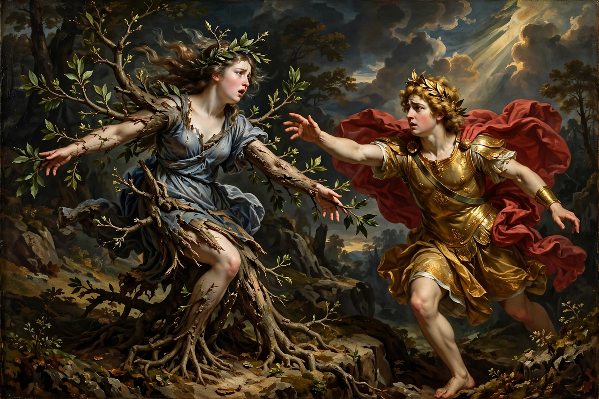

From Wikipedia, the free encyclopedia
| Author | Ovid |
|---|---|
| Language | Latin |
| Genre | Epic poetry, mythology |
| Form | 15 books, dactylic hexameter |
| Published | AD 8 |
| Lines | 11,995 |
The Metamorphoses (Latin: Metamorphōseōn librī, "Books of Transformations") is a Latin narrative poem by the Roman poet Ovid, considered his masterpiece. Completed in AD 8, it is a vast mythological epic in fifteen books and nearly 12,000 lines, chronicling the history of the world from its creation to the deification of Julius Caesar through a loose framework of more than 250 myths, most involving magical transformation.

Daphne's transformation into a laurel is among the poem's most famous tales.
Ovid opens with a proem: "My mind is bent to tell of forms changed into new bodies" (In nova fert animus mutatas dicere formas corpora). The poem moves from the creation of the cosmos and the mythical Ages of Man through the flood, then ranges across Greek and Roman myth: Apollo and Daphne, Io, Phaethon, Narcissus and Echo, Daedalus and Icarus, Orpheus and Eurydice, Pygmalion, Arachne, Medea, the Trojan War, Aeneas, and Roman legend, ending with the apotheosis of Caesar and a compliment to Augustus. Ovid then closes by predicting his own immortality through the poem.
Transformation is both subject and method: stories flow into one another through narrators, analogies and inset tales. Love — especially the violent desire of gods for mortals — drives many episodes. Ovid treats heroic epic material with wit, pathos and rhetorical brilliance, repeatedly subverting the solemnity of the genre established by Virgil's Aeneid. Pythagoras's long speech in Book 15 gives the poem a philosophical coda on universal change: "everything changes, nothing perishes" (omnia mutantur, nihil interit).
The Metamorphoses became the single most influential classical text on Western literature and art after antiquity. It preserved the canonical versions of most Greek myths known today and inspired Chaucer, Shakespeare, Dante, Bernini's Apollo and Daphne, Titian's poesie, and countless later works. Ovid claimed the poem was unfinished and tried to burn it when he was exiled by Augustus in AD 8, but copies already circulated.